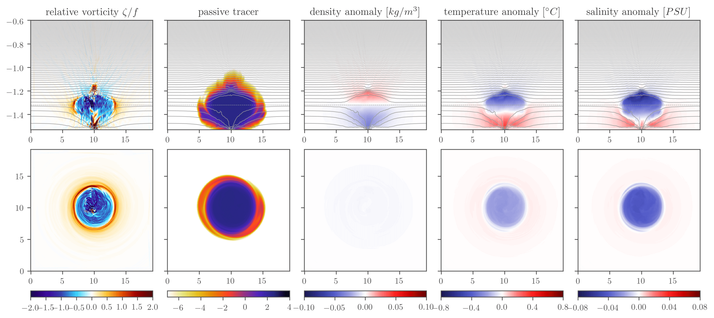
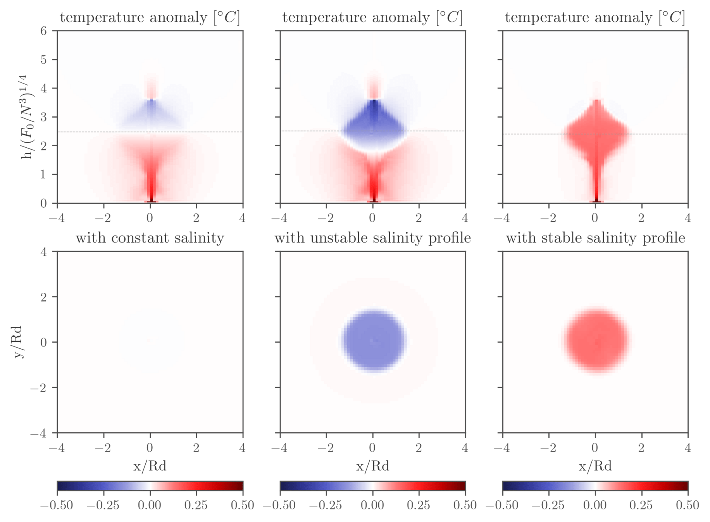
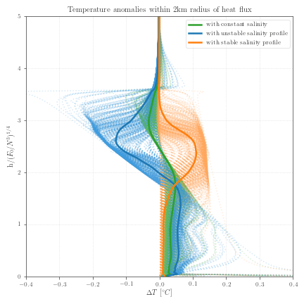
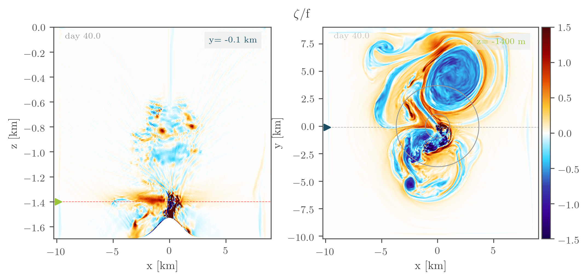
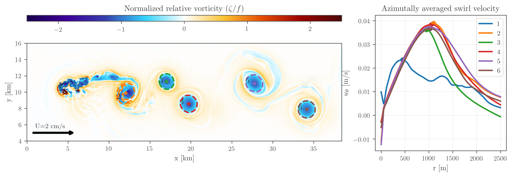
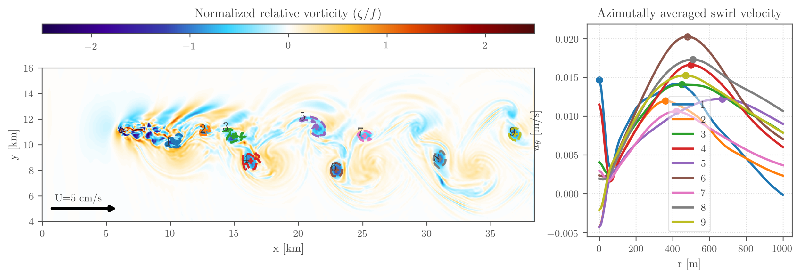
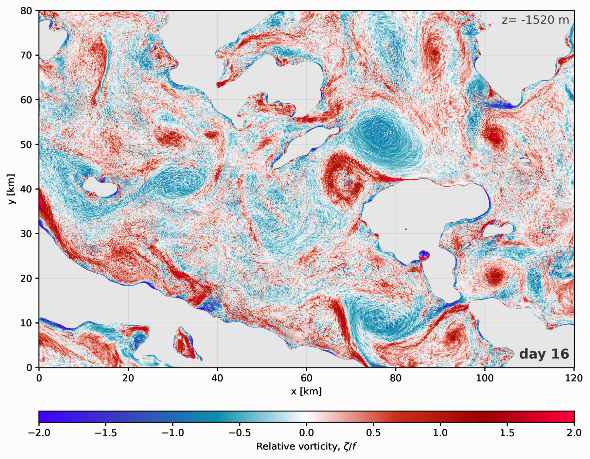
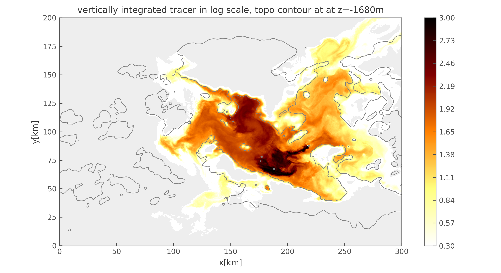

InstitutionLOPS, Université de Bretagne Occidentale
SupervisorsG. Roullet, J. Molemaker
High-resolution numerical study of a hydrothermal plume in a rotating, stratified
ocean, combining idealised CROCO simulations in three dynamical configurations with
a nested realistic ROMS simulation of the Lucky Strike vent field on the Mid-Atlantic Ridge.
assets/img/plume/mushroom_3d.png 3D plume isosurface figure
3D isosurface of the hydrothermal plume at Lucky Strike, showing the characteristic mushroom structure: a rising buoyant stem spreading into a horizontal intrusion at neutral buoyancy depth (~1350 m).
Scientific context
Mid-ocean ridges host approximately 700 active hydrothermal vent sites, collectively
releasing around 11 TW of geothermal heat into the deep ocean. Lucky Strike, located
on the Mid-Atlantic Ridge at 37°N, is one of the best-characterised vent fields, with
a total heat flux of 200 MW – 1 GW. Hydrothermal plumes influence deep ocean mixing,
tracer transport, and biogeochemistry, yet their dynamics in a rotating, stratified
environment were poorly constrained by 3D simulations.
This study asked: what coherent structures does the ocean generate in response to a
localised bottom heat flux? And can a regional ocean model, with its inherent
physical approximations, capture them faithfully?
Model configurations
The study used two parallel branches: an idealised CROCO configuration designed to
isolate processes incrementally, and a nested realistic ROMS UCLA simulation of the
actual Lucky Strike bathymetry.
Configuration
Relaxes
Relative cost
Purpose
Hydrostatic
none
baseline
Far-field vortex dynamics
NHMG
Hydrostatic approximation
× 3–5
Near-source plume ascent
ROMS UCLA (realistic)
Hydrostatic
none
Complex bathymetry, tidal forcing
Domain parameters: 19.2 × 19.2 km (quiescent) and 38.4 × 19.2 km (crossflow runs),
50 m horizontal resolution, 1.2–12.5 m vertical resolution (64–128 σ-levels),
total heat flux 1000 MW, f-plane rotation f = 10−4 s−1,
N ~ 10−3 s−1. All runs on TGCC Irène using Slurm job scheduling.
The NHMG module (Roullet et al., 2017) solves the non-hydrostatic pressure
correction q via a multigrid Poisson solver in σ-coordinates, requiring grid
dimensions of 2p or 3 × 2p.
Simulation snapshots

assets/img/plume/cold_anomaly_5panel.png 5-panel cold anomaly figure (vorticity · tracer · density · T anomaly · S anomaly)
Five-panel diagnostic at the intrusion level. Despite originating from a heat source,
the plume fluid arrives at neutral buoyancy colder and fresher than ambient,
a consequence of the Atlantic double-diffusive stratification (steep compensating
temperature gradient). This is the first 3D rotating confirmation of the Speer &
Rona (1989) cold-core anticyclone mechanism.

assets/img/plume/salinity_cases_6panel.png Three salinity cases: constant S · unstable S · stable S (vertical sections + horizontal vorticity at intrusion level)
Effect of salinity stratification on plume intrusion level and vortex polarity.
With an Atlantic-like unstable profile (salinity decreasing with depth), the steep
compensating temperature gradient means the rising plume becomes colder than ambient
before reaching the intrusion level, generating a cold-core anticyclone.
With a stable salinity profile the plume remains warm at intrusion level, generating
a warm-core anticyclone.

assets/img/plume/temp_anomaly_profiles.png Temperature anomaly profiles within 2 km of heat source (green: constant S · blue: unstable S · orange: stable S)
Temperature anomaly profiles within 2 km of the heat source across the three salinity
cases. The unstable S profile (blue) develops a clear cold anomaly above mid-height,
while the stable S profile (orange) and constant S (green) remain warm throughout
the rise.

assets/img/plume/vorticity_seamount.png Relative vorticity, Gaussian seamount (ζ/f at intrusion level)
Gaussian seamount: anticyclone undergoing cyclonic precession around the topography, at a period inconsistent with the inertial frequency f, consistent with topographic Rossby wave dynamics.

assets/img/plume/crossflow_2cms.png Crossflow U = 2 cm/s
Crossflow U = 2 cm/s: a coherent anticyclonic lens detaches from the source and propagates downstream.

assets/img/plume/crossflow_5cms.png Crossflow U = 5 cm/s
Crossflow U = 5 cm/s: only incoherent vorticity patches detach, no coherent lens forms.

assets/img/plume/realistic_vorticity.png Relative vorticity, realistic domain z = −1520 m, day 16
Relative vorticity at z = −1520 m in the realistic ROMS simulation (day 16). Complex
bathymetry and biases in the parent model stratification prevent coherent vortex formation,
a stark contrast with the idealised runs and a diagnostic of one-way nesting limitations.

assets/img/plume/tracer_dispersion.png Vertically integrated tracer, realistic simulation (200 m resolution)
Vertically integrated passive tracer after 2 months in the realistic simulation (200 m resolution).
The heat flux destratifies the water column and drives tracer upward to the intrusion layer,
enhancing lateral dispersion at 100 to 150 m above the vent fields.
Auclair, F. et al. (2018). A non-hydrostatic non-Boussinesq algorithm for free-surface ocean modelling. Ocean Modelling. doi:10.1016/j.ocemod.2018.07.011
Shchepetkin, A.F., McWilliams, J.C. (2005). The regional oceanic modeling system (ROMS). Ocean Modelling, 9, 347–404. doi:10.1016/j.ocemod.2004.08.002
Speer, K.G., Rona, P.A. (1989). A model of an Atlantic and Pacific hydrothermal plume. Journal of Geophysical Research, 94(C5), 6213–6220.